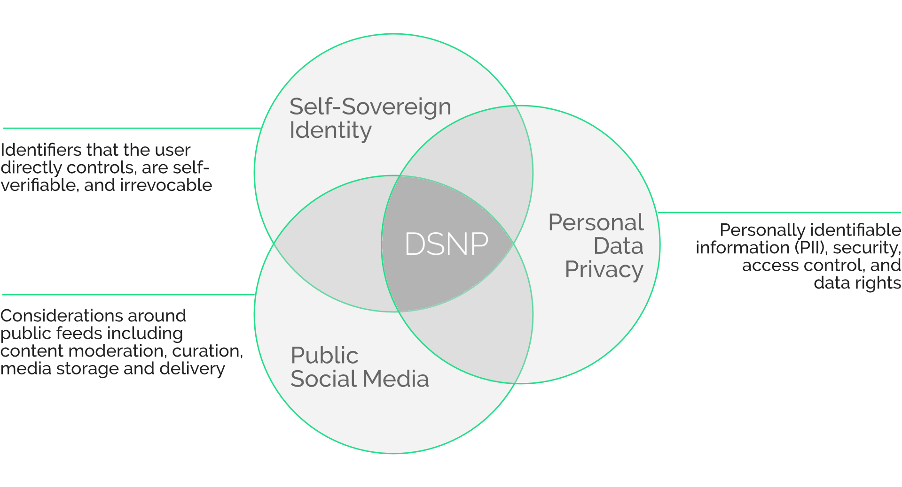

Braxton Woodham, Co-Creator, DSNP
Over a decade ago I had a front-row seat as the Web 2.0 surveillance economy captured the data of millions — and eventually billions — of people in data infrastructure owned by a small oligarchy of private companies. The first startup I founded began as a social network, where we worked through the complex economics of attention. We soon found that consumers had a voracious appetite for social media, but they weren't willing to pay. While we pivoted to providing analytics for companies like Google and Disney by integrating with Facebook's Open Graph API and processing Twitter's firehose of information, other entrepreneurs focused on monetizing rapidly scaling consumer attention. They soon found that surfacing emotionally triggering content increased user engagement and, fueled by massive data repositories, created ad-based business models that were so lucrative they soon dominated the way the world interacts online. A toxic cycle of growth hacking and greed began, leading to what has become a dark age of polarization and rampant disinformation.
By 2010, it was clear to me that we needed a complete reset: This massive data infrastructure should not be owned by a company, and instead should be managed as public infrastructure, with data itself controlled by users. As Mike Masnick eloquently describes in his paper for the Knight First Amendment Institute, this could be managed through open source protocols, much like how email works today. But there was a glaring technical barrier. Every social network depends on a social graph 1 — this is its core, essential to all communications, from posts to likes to direct messages. But a shared public social graph couldn't exist without a company or a government in charge of storing the data. There was no clear way to achieve a decentralized, shared store of this data.
Then in 2014, I learned about Ethereum and realized that blockchain technology had the potential to solve the data storage problem: Essential data elements could be stored by “disinterested parties,” meaning no person or private company with potentially misaligned economic incentives could control the database (Albert Wenger has an excellent post on this topic). In fact, with a protocol that leverages blockchain technology for shared state, it could finally be possible to make social functionality native to the Internet itself. In other words, we could make the web socially aware, so we are no longer dependent exclusively on private companies for what has become a critical service to people around the world.
We believe that a public social graph completely disconnected from financial incentives is the first essential piece of infrastructure required to unlock the true potential of social networks for collaboration and to dismantle the surveillance economy. The Decentralized Social Networking Protocol makes this possible.
In development for nearly three years and with an end-to-end proof of concept complete, the Decentralized Social Networking Protocol (DSNP) builds on top of TCP/IP and HTTPS to facilitate a secure, open source, universally accessible social graph that is not linked to any financial incentives by crypto tokens or private company database servers. The decoupling of financial incentives from the core protocol is a key distinction of DSNP from all other blockchain-based social networking projects that we've seen, and we believe this is essential to support a healthier third generation of the web.
This new infrastructure has the potential to free the entire web of human online social activity from private company control and unlock a path for vibrant innovation from diverse contributors. Unlike federated or peer-to-peer social networks, social networks built from this universal, global social graph will allow people to interact with friends, family, creators, and public figures wherever they are, using any application they choose. And, as Masnick describes in his paper, when social networking is an open ecosystem built on a shared protocol, developers can innovate without fear of being shut out by a single powerful platform. This creates a “laboratory of the real world” in which “anyone could present a new interface, new features, or better moderation,” with open standards resulting in more innovation, competition for new business models, and value for users.
This protocol sits at the intersection of three key domains: Self-Sovereign Identity, Personal Data Privacy, and Public Social Media. Much like the Simple Mail Transfer Protocol (SMTP) doesn't address all the implementation details of email servers (such as mail storage and security), DSNP isn't intended to address all the implementation details of specific technical domains such as media storage and streaming functionality for social media videos.

We designed DSNP to connect to projects led by others with deep specialization in these complex spaces. We see the protocol serving as the “rug that ties the room together,” providing a critical link between key open source and commercial projects in these domains. Our work already builds on the existing core Internet and web protocols, and leverages great work from a variety of open source projects, including the W3C ActivityPub and Decentralized Identifier Specification. Over time, the protocol could also give these projects access to the compounding network effects that result from a public, shared social graph.
From experience ranging from the launch of websites to Atlas rockets, I have learned the hard way that it is important to use the right tool for each job, and how all these tools must work in concert to support the entire system with integrity. To that end, we have been very focused on limiting the use of blockchain technology to the narrow range of activities where it is essential; specifically, where it is required to eliminate the aggregation of data in private platforms. DSNP leverages a blockchain for the very precise, foundational implementation of the social graph and public message routing (a message is a general term for any public interaction on social media — a post, video, picture, comment, reaction, etc.). We believe it is these core elements of the social network that must become universally accessible public infrastructure to enable a shift to a healthier web.
Further, we believe the scope for any public protocol should be as narrow as possible. We consistently challenge ourselves to restrict the functionality of DSNP to what is absolutely necessary to free the social graph from central control. We believe important functions — including the moderation, curation, and display of content — are best addressed outside of the protocol, through an open marketplace of services and applications that work at higher levels in the technology stack, with much of this activity conducted off-chain.
For DSNP to facilitate the core social layer of the Internet, we knew we must find a blockchain solution that could be economically viable at the scale of billions of users. To optimize for the unique dynamics of social networks, we needed to address a range of concerns, including energy efficiency, low-latency consensus mechanisms, and state sharding. While we first developed a working implementation of DSNP for the Ethereum Rinkeby and Ropsten Testnets to deliver an end-to-end proof of concept, we knew that Ethereum would not ultimately meet our criteria. Our next step was to conduct a deep technical analysis of over 30 public blockchain projects to identify optimal implementation targets for DSNP (and you can learn more about our work here). Through this work, we discovered that the unique attributes of Polkadot's architecture are extremely well suited to implement DSNP at scale.
As we work on the first production-grade implementation of DSNP, we look forward to sharing details on our approach, roadmap, and progress. Importantly, we will also be evolving our organization's structure to best support the work ahead. DSNP is a public resource that is chain agnostic and has no link to financial incentives, and we are preparing to transition the governance of the protocol to a nonprofit organization that is suited for this responsibility. While our blockchain work to date was funded by Project Liberty, we are now forming a commercial organization that will work in partnership with Parity Technologies to develop a Layer-1 parachain on Polkadot as the first implementation of DSNP at scale.
The most critical element of the success of DSNP as infrastructure that supports a healthier web — which is the vision that inspired us from the beginning — is the work of Project Liberty to ensure that this protocol supports our social fabric. Since the early stages of this initiative, we have teamed with Georgetown University's Ethics Lab to deepen and clarify the ethical principles we see at the core of our values-driven technology development, including a responsibility for accountability and transparency in our work.2 However, this is only the beginning. We are working to make sure this next foundational layer of the web is designed and built not just by technologists, but in collaboration with experts from a range of intersectional disciplines that include social scientists, philosophers, and governance and policy experts. This foundational layer amplifies the complexity of this undertaking, but we believe it is imperative for work that is both inherently complicated and vital to our social fabric.
We cannot do this important work alone. It can realize its potential only with the collaborative effort of many communities, developers, and experts. We invite you to join us in designing and building what we believe could be one of the most important public infrastructure projects of our time: to make the web itself socially aware.